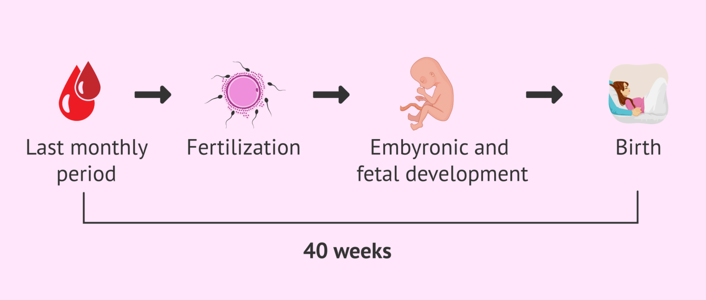
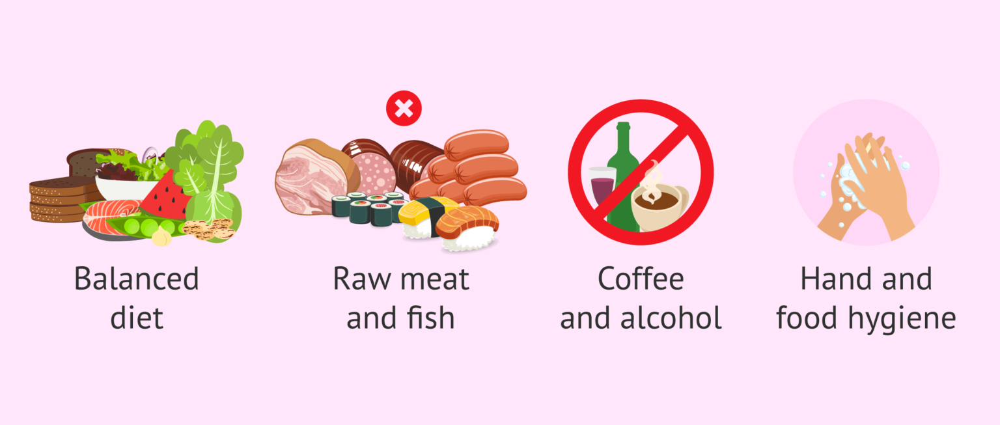
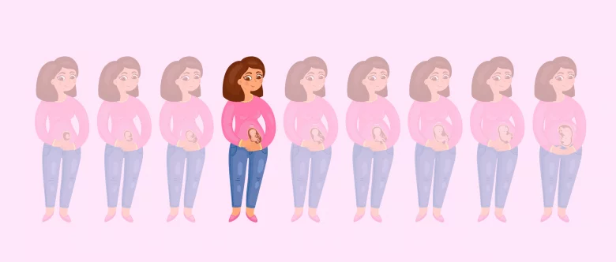
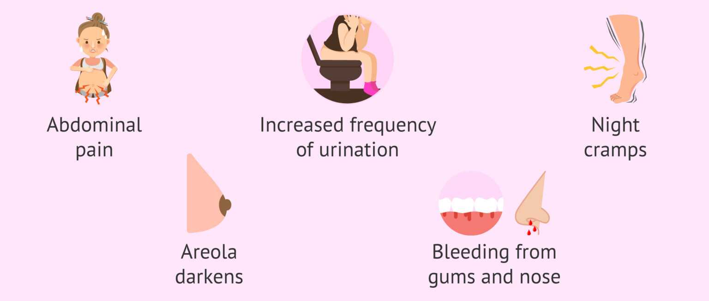
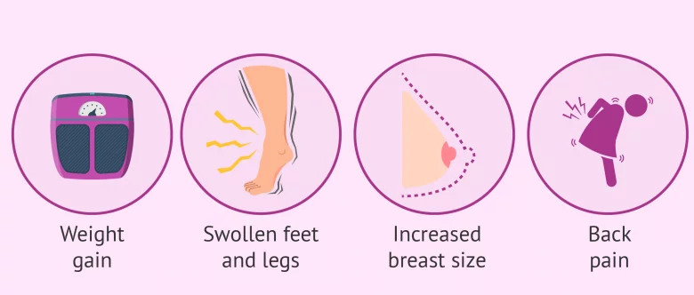
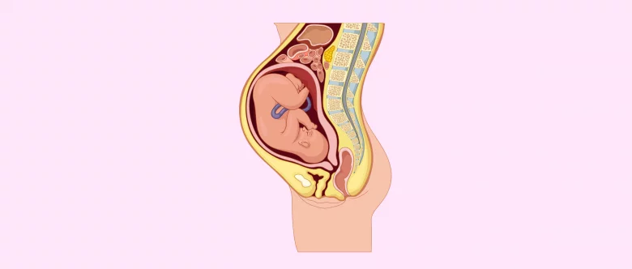
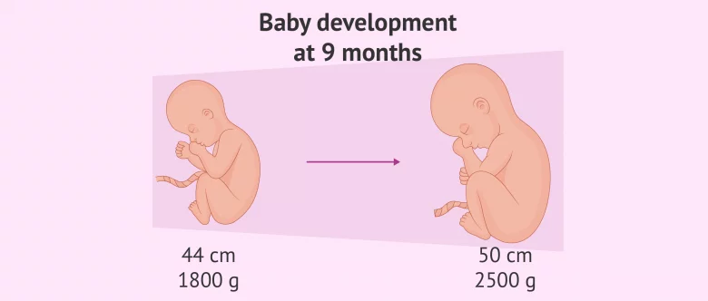
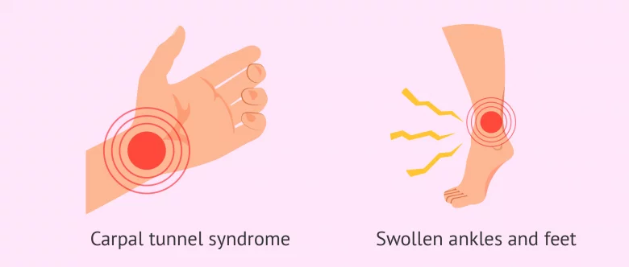

Pregnancy is a long process that lasts about 40 weeks. Throughout the process, both the pregnant woman and the fetus go through a series of major changes. Before examining the details of the first month of pregnancy week by week, it should be noted that gynecologists and all professionals from the field of assisted human reproduction start counting the weeks of pregnancy with the date of the last menstrual period (LMP).
This is because it is sometimes difficult for a woman to know the exact time of fertilization. However, a woman usually does know when her last menstrual period was. Therefore, the "first day of pregnancy" is considered to coincide with the date of the last menstrual period in a 40-week gestation.
However, it should be noted that some do consider that week 1 of pregnancy begins when the fertilization of the egg occurs after sexual intercourse, and the existence of the embryo. Throughout this article we will discuss the weeks of pregnancy as it is usually done by specialists in reproduction and obstetrics, considering the first week of pregnancy from the date of the last menstrual period (LMP).
Pregnant women need to have a very complete diet that covers all the vitamin and mineral requirements, since the nutrition of the fetus will depend entirely on them, as well as the supply of oxygen.
In particular, pregnant women should start paying attention to the following foods and nutritional intake:
The following sample menu includes a variety of folate-rich foods, such as avocado, spinach, sweet potato, and quinoa. It also includes lean proteins like chicken and salmon, essential for foetal development. Additionally, the snacks provide a healthy dose of fibre and vitamins. Remember to speak to your healthcare provider before making any major dietary changes during pregnancy. You can follow this chart or a similar one to curate in your 1st month pregnancy diet.
Sudden changes of mood, oversensitivity, and irritability are very common among pregnant women due to the drastic impact of hormonal changes as well as every process that is developing within you.
Moreover, such hormone adjustments may cause you to feel nausea and sickness due to increased levels of beta-hCG from week 5 onwards.
You are likely to notice a slight increase weight gain, along with a series of discomforts that occur from the uterus expanding, including abdominal and leg cramps, heartburn, sciatic nerve pain, strong urge to pee, constipation, etc. Also, an increase in maternal plasma volume occurs in order to nourish the unborn baby.
It is still too early to notice these body changes at a glance. Usually, your stomach starts to get bigger from the third month of pregnancy and continues to do so up until childbirth.
On the other hand, the cervix usually becomes softer. This is the reason why having a mild spotting after intercourse is normal.
Exhaustion is another symptom that you may notice from the second month of pregnancy onwards. During the first trimester of pregnancy many women feel a continuous need for sleep as well as exhausted and drained all the time
Pregnancy also affects the sense of taste (dysgeusia). Therefore it is likely that your meal preferences change and you have an increased or decreased appetite.
Moreover, you may experience an increase in breast growth, something that may be painful. You may begin to notice small nodules or pimples around your areola known as Montgomery tubercles.
Soon as your doctor starts monitoring your pregnancy, he or she will recommend that you take certain food supplements containing folic acid, an essential vitamin to prevent fetal malformations.
It is also crucial to eat a balanced diet that includes the following essential nutrients: iron, calcium, iodine, zinc, vitamin D, fiber, and omega-3 fatty acids.
Likewise, there are certain foods that one should avoid while pregnant, since they can be harmful for you and the fetus. Raw meat and fish, seafood, sausages, milk, unpasteurized cheese, etc. are some examples. All of them may cause toxoplasmosis or listeriosis.
Coffee and alcoholic drinks are totally unadvisable during pregnancy, as they can increase the risk of fetal death.
In addition to all this, your personal hygiene matters in pregnancy as well, especially when preparing meals: washing your hands, keeping food preparation areas and equipment clean, rinsing raw fruits and vegetables thoroughly before eating, etc. is crucial.
Certain eating habits can help reduce nausea and other pregnancy symptoms, including:
The third month of pregnancy marks the end of the first trimester.
Fortunately, the most unpleasant symptoms of pregnancy, like nausea and vomiting, start to disappear this month. However, you are still likely to experience them throughout the whole month up until the beginning of month 4 approximately.
In essence, the most remarkable symptoms of pregnancy during month 3 include:
The fourth month of pregnancy marks the beginning of the second trimester and covers from week 13 to week 16. The miscarriage rate is considerably lower now, and the symptoms of the pregnant woman are not so annoying than in previous months, since nausea disappears in most of the cases
During this month of pregnancy, your belly continues growing, slowly acquiring a protruding appearance. At this stage of pregnancy, women already show, since the uterus is growing and continues ascending into the abdominal area, being a few centimeters below your belly button.
Your uterus growing causes abdominal cramps and adds pressure to your bladder. This is the reason why pregnant women feel like they need to urinate more frequently than normal. Also, your enlarged uterus presses down on the sciatic nerve and causes nocturnal leg cramps.
Breasts go through a series of changes, too. The size of the nipples increases, areolas get darker, and the vessels become more noticeable due to changes in blood flow. These vascular alterations can cause bleeding gums and nose, known as gingivorrhagia and epistaxis, respectively.
All these developmental changes will cause you to gain a considerable amount of weight, averaging from 4 to 5 more kilograms.
From this moment on, pregnancy hormones will start declining and leveling off for the remainder of pregnancy. In comparison with the previous month, human chorionic gonadotropin (beta-hCG subunit) levels have diminished, whilst those of progesterone and estrogen increase. This stability of beta-hCG causes nausea and vomiting to subside or even go away.
Increased levels of estrogen and progesterone cause an increase in the production of melanin by the end of month 4, accompanied by the appearance of spots and the so-called linea nigra (darkening of the linea alba).
Hormonal changes are responsible for frequent forgetfulness, which is likely to worsen as the pregnancy progresses, hence the common term last-trimester fog. Being forgetful during pregnancy is normal, and is caused by structural changes that occur in the brain to prepare for motherhood.
You will also become more emotionally stable, with a more positive and relaxed attitude. The fear of miscarrying decreases, since the vital organ of the baby are fully formed and the placenta has completed its development.
Some pregnant women start feeling baby movements, especially those who have already been pregnant in the past, as their uterine walls have a reduced abdominal muscle tone.
The fifth month of pregnancy encompasses from week 17 to 20 and is part of the second trimester of pregnancy. The most obvious symptoms to expect are, on the one hand, the increased size of the breasts and the belly, as well as the first baby movements.
The fifth month of pregnancy is the halfway point of pregnancy. In fact, it is the moment when the pregnant woman starts enjoying it, since the miscarriage rate decreases and the symptoms are not so uncomfortable yet.
It is likely that you experience a weight gain of between 2.5 to 5 kg in this stage of pregnancy and you may feel that your legs and ankles are swollen. At the same time, this weight gain can make you feel more tired and bloated. This set of symptoms can get worse due to intra-abdominal pressure, causing you to breath differently and aggravating the feeling of fatigue.
The increase in your breasts size is due to hormones preparing your mammary glands to start producing milk. Areolas become darker and the veins become more noticeable to the naked eye. It is likely that, during this month, you have to use nursing bras or, at least, a larger size.
Despite fetal weight is not greater than 300 g at this stage of pregnancy, its growth may start affecting your organism. You might notice certain symptoms in your backbone that cause you to change your daily positions. In fact, you might feel clumsier when walking due to the size of your baby.
It is normal to feel an increased sensation of thirst. For this reason, we recommend that you increase your daily intake of liquids as well as avoid holding your urine. Both practices, at the same time, are highly beneficial for preventing Urinary Tract Infections (UTIs), which can cause complications during pregnancy.
The sixth month of pregnancy comprises week 21 to 24 of pregnancy. From this moment on, fetal development is at an advanced stage, since you are now halfway through your pregnancy.
At month 6, we are almost at the end of the second trimester of pregnancy, which is commonly the most comfortable one for the pregnant woman. Both the woman and the baby, however, continue experiencing great changes, especially in the unborn baby, who is already in a fetal position in the uterus.
Month 7 of pregnancy, which covers from weeks 25 to 28, marks the third and last trimester of pregnancy. This stage of pregnancy is the beginning of the final countdown to childbirth. However, the baby is not in the right position for birth yet.
The weight of the baby plus the placenta, uterus and amniotic fluid can add up to 6 kg to your total body weight. This causes you to experience more trouble when performing daily routines due to the excess weight you have to bear, which can cause you to feel clumsy. For this reason, it is important that you are cautious and be specially careful when going upstairs and downstairs while pregnant to prevent accidents.
During the third trimester of pregnancy, the placenta needs a greater blood supply to ensure that the baby nurtures healthily. As a result, the cardiovascular workout increases, since the blood supply from the mother can double at this point, causing the following symptoms:
As a consequence of these symptoms, it is likely that you suffer liquid retention problems. It is common for pregnant women to experience leg swelling issues, especially in the calves, ankles, and feet.
Month 8 of pregnancy begins on week 29 and finishes with week 32 and is therefore part of the third trimester of pregnancy. During these four weeks, fetal growth is considerable, since he is half the total weight that he will have at birth. Moreover, he is setting into the birth position.
Labor is getting closer, so it is important that you pay special attention to the potential signs and symptoms that can indicate preterm labor. However, it is also possible that the birth has not yet taken place. Another option is to start making preparations for this long-awaited day.
During month 8 of pregnancy, it is likely that you experience a type of uterine contractions called Braxton-Hicks contractions, which cause you stomach to harden for a few moments. They are a clear symptom that your womb is getting prepared for labor.
The size of your belly is likely to cause you trouble moving and make you feel tired with just walking, doing simple daily routines, or just talking. Back and leg pain can become more intense from this month onwards.
The weight gain you have experienced is more than noticeable now, since you may have gained about 8 kg or more including the weight of the fetus, the placenta, your womb, the amniotic fluid, your breasts.
In case your baby has already settled into a head down position, thereby being ready for birth, you may feel that your hips and pelvis are widening to get ready for labor. This makes walking a little bit more uncomfortable.
The womb reaches its maximum degree of expansion during month 8, and can even get close to the breastbone, causing your stomach to be much more compressed than ever. As a result, the sense of acidity or heartburn increases.
On the other hand, the bladder and intestines also suffer the consequences of the reduced room available due to your baby growing. This increases your need to pee along with other unpleasant symptoms like constipation.
With the ninth month of pregnancy, the final stretch begins, which covers from week 33 till week 36 of pregnancy. These days, the symptoms to expect are quite uncomfortable, as the baby's development is finishing, and the only thing left for him to do is gaining more and more weight.
Labor might start at any time within the next weeks, so we recommend that you avoid traveling or long trips, and try to pay attention to any kind of sign that indicates your baby's birth is imminent.
At this stage of pregnancy, it is likely that the baby is stuck in the pelvis, which is to say, with the head placed above the cervix. This position is called cephalic presentation, head presentation or head-first presentation. If the baby is not lying in this position over the next few weeks, your OB/GYN may schedule a C-section, since vaginal delivery would be highly complicated if the baby is inadequately positioned.
Although each baby develops differently, on average, a fetus of 36 weeks can measure almost 50 cm, and weight between 2200 and 2800 g. He or she can gain up to 30 g daily.
The physical appearance of the fetus at this month of pregnancy is very similar to the one he or she will have at birth, as labor is just a few weeks ahead.
Lanugo has almost disappeared from the skin of the baby. This, along with the accumulation of fat under the skin, which is ready and has a pinkish color, give him or her a totally human appearance.
The situation of the mother-to-be when she is nine months pregnant does not vary too much if compared to the previous weeks. However, the discomforts she was already experiencing might get even worse due to the advanced stage of pregnancy.
If the baby is already settled into a head-down position, the mother might feel some relief, as pressure on the stomach decreases. But this position means the baby's feet are located under the breastbone, which makes kicks very annoying and may lead to shortness of breath. Simultaneously, the head adds pressure to the bladder, thereby increasing the urination frequency.
It is very likely that bloating and liquid retention become worse during the hot summer months. It is normal that you feel that your feet and ankles are excessively swollen.
A common affection of pregnant women is the Carpal Tunnel Syndrome (CTS), which is caused by the inflammation of the nerves located in the median nerve and accumulation of fluid, causing pain and numbness of the wrists.
It is also normal that the belly button pops out during this month due to the expansion of your abdomen. A few months after birth, skin, muscles, and uterus go back to their normal position, and your belly button will go back in.
When a woman is 9 months pregnant, she is expected to have gained between 10 and 14 kg of weight, which makes back pain, cramping, pelvic pain, and exhaustion more common. These nuisances can be relieved with the following exercises:
If the third trimester ultrasound scan has not been offered to you yet, it is likely to be performed to you in the next weeks. This imaging test is typically done vaginally, and provides us with the following information: